Para picar
Edamame con sal de Maras
5 €Chips de camote con ají
5 €Bao de panceta
7 €Panceta glaseada, cacahuete, cilantro
Calle Mayor 12 · Donostia
La casa
Kaigan quiere decir costa. La nuestra junta dos: la del Pacífico, donde nació el ceviche, y la del Cantábrico, donde tenemos la barra.
En la carta manda el pescado fresco y los sabores de la cocina nikkei, la que nació del encuentro entre Perú y Japón: cítricos, picante y salsas con mucho sabor. Ceviche, tartar de atún, hand rolls y pulpo anticuchero. Y para acompañar, pisco y cócteles.
Calle Mayor 12, en la Parte Vieja de Donostia.
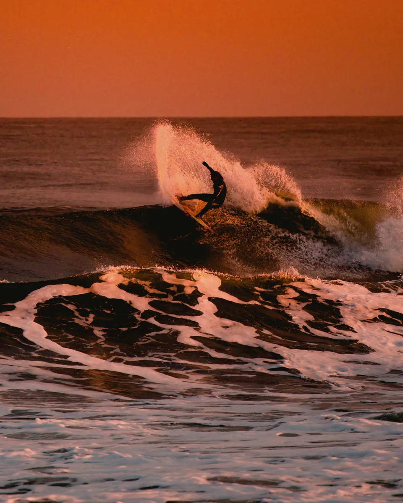
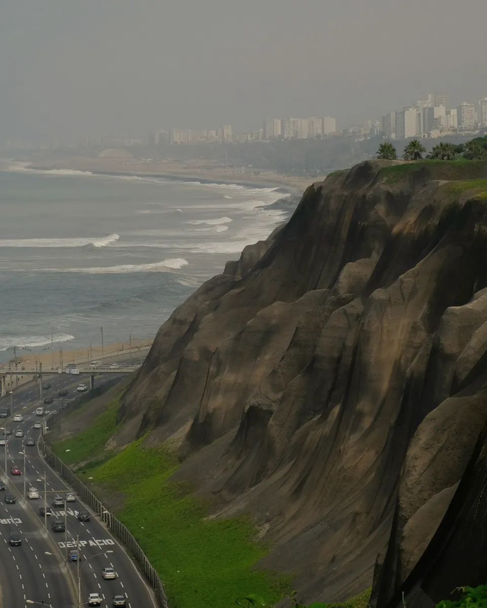
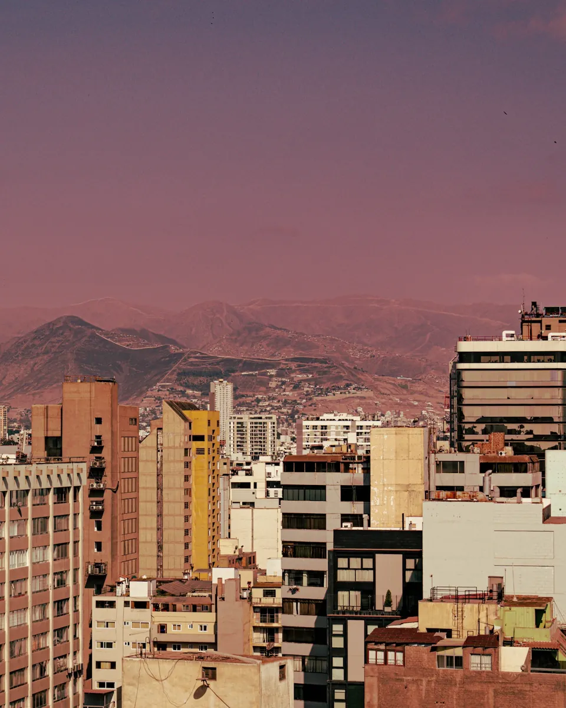
Fotos de Unsplash
La carta
Carta de ejemplo: platos y precios de muestra.
Panceta glaseada, cacahuete, cilantro
Corvina, leche de tigre, camote, cebolla morada, maíz
Atún rojo, pepino, mango, cebolla morada
Aguacate, sésamo
Salsa acevichada, aguacate
Cebolleta, shiso
Pulpo a la brasa, papas doradas, mayonesa de ají amarillo
Arroz salteado al wok, cerdo, tortilla, cebolleta
Mousse de chocolate, nata, frambuesas
Y para acompañar, pisco y cócteles.
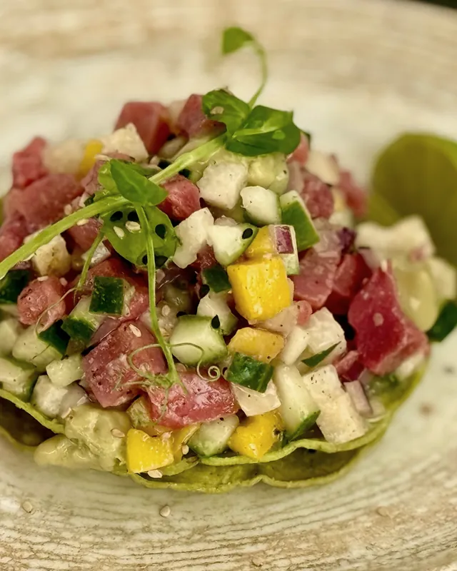
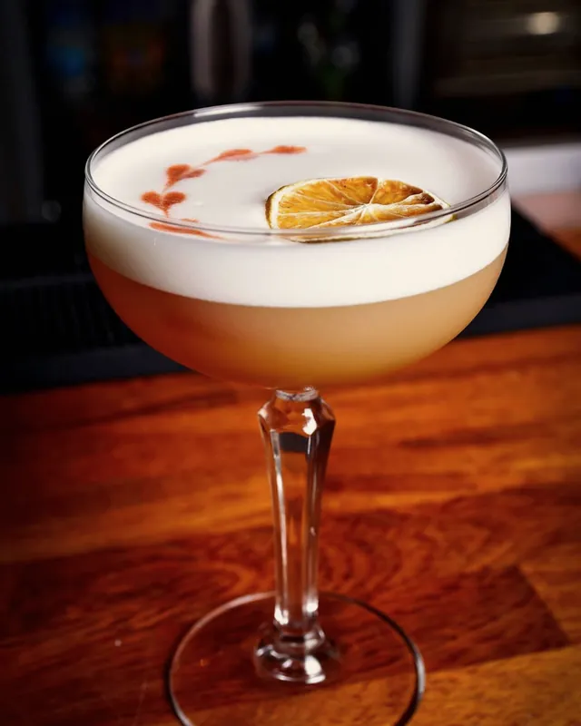
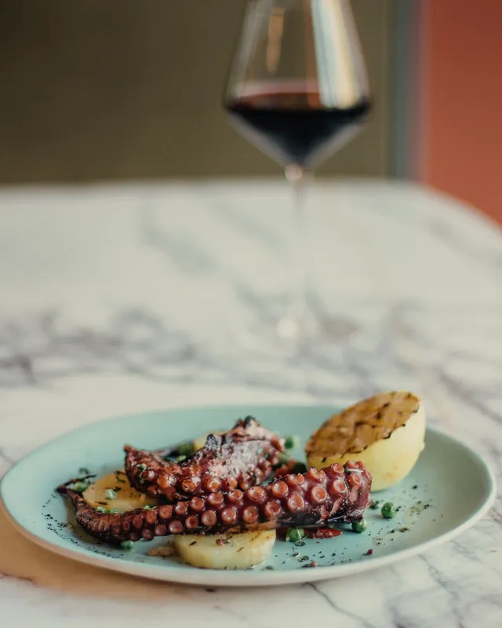
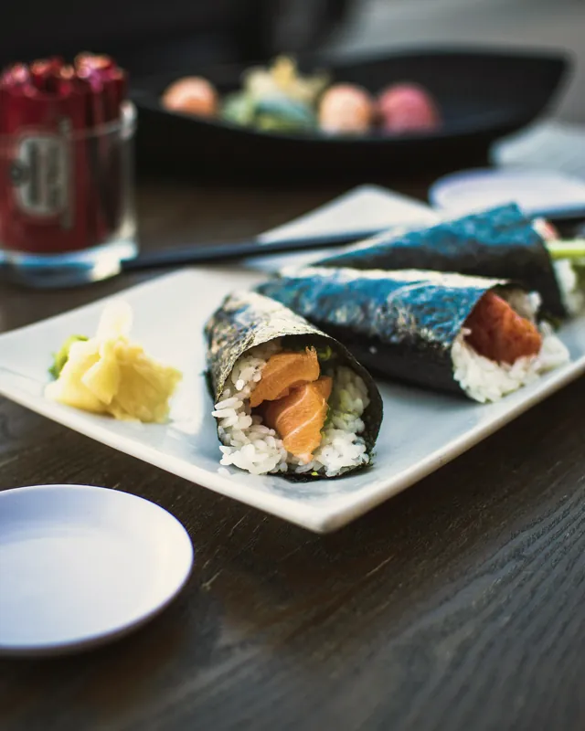
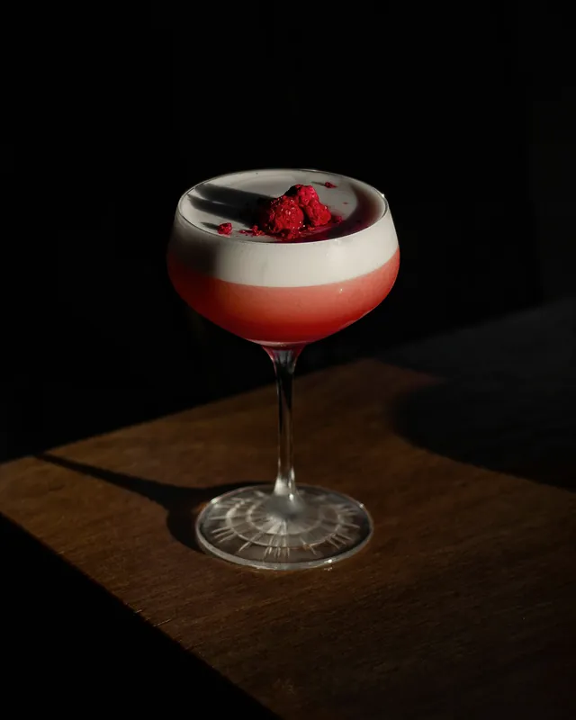
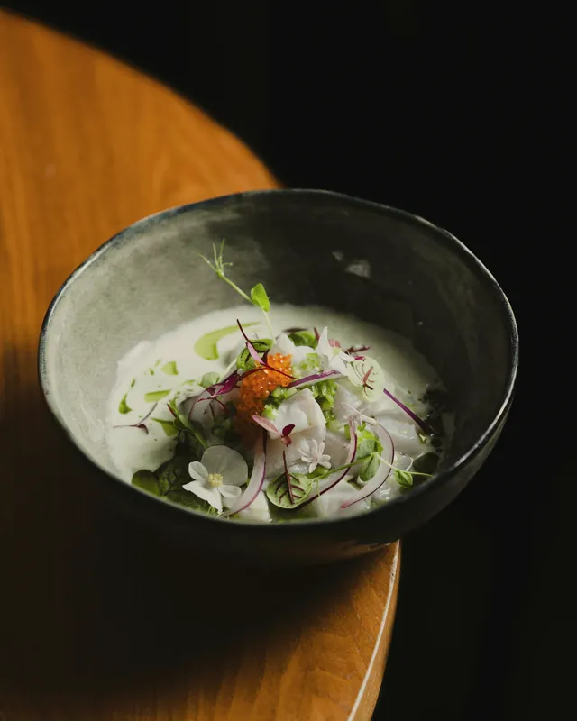
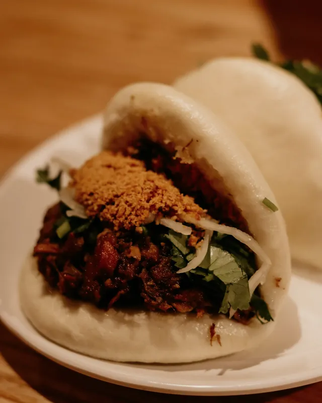
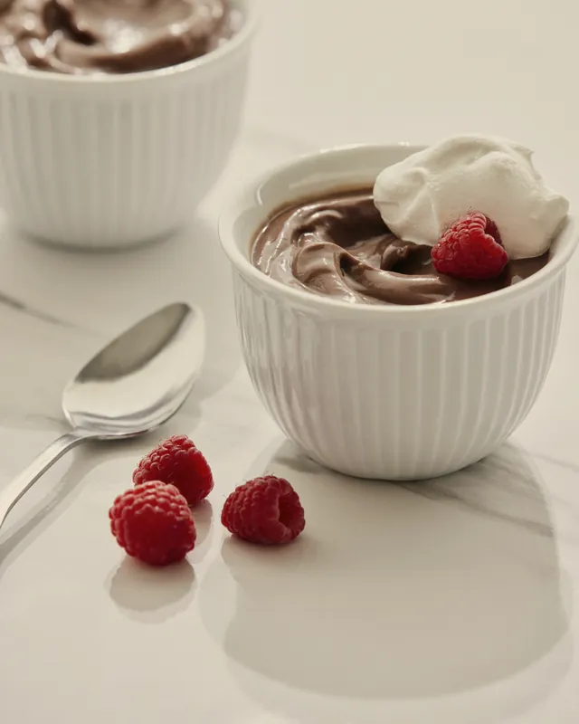
Fotos de Unsplash
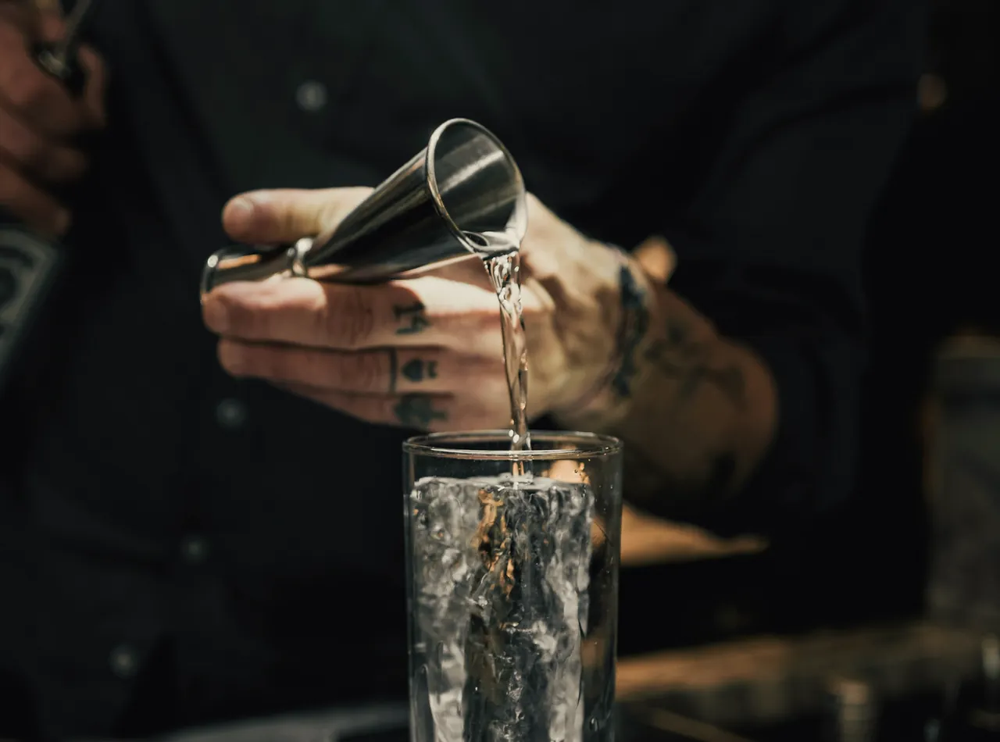
La barra
Los viernes y los sábados la barra está abierta hasta la una de la madrugada.
Horario
| Lunes | Cerrado |
|---|---|
| Martes | 13:00 – 23:30 |
| Miércoles | 13:00 – 23:30 |
| Jueves | 13:00 – 23:30 |
| Viernes | 13:00 – 01:00 |
| Sábado | 13:00 – 01:00 |
| Domingo | 13:00 – 17:00 |
Cómo llegar
Calle Mayor, 12
Al cargar el mapa, tu navegador se conecta con Google.Texto de ejemplo: en tu web, con las rutas a pie y las líneas de tu zona.
Basílica de Santa María, 1 minuto. El puerto, unos 3. Playa de La Concha, unos 6.
Paradas del Boulevard, a unos 4 minutos andando.
Estación de tren, unos 20 minutos andando.
El parking más cercano, a unos 4 minutos andando.
Estación de bicis más cercana, a unos 3 minutos.
@kaigan Aquí iría tu Instagram